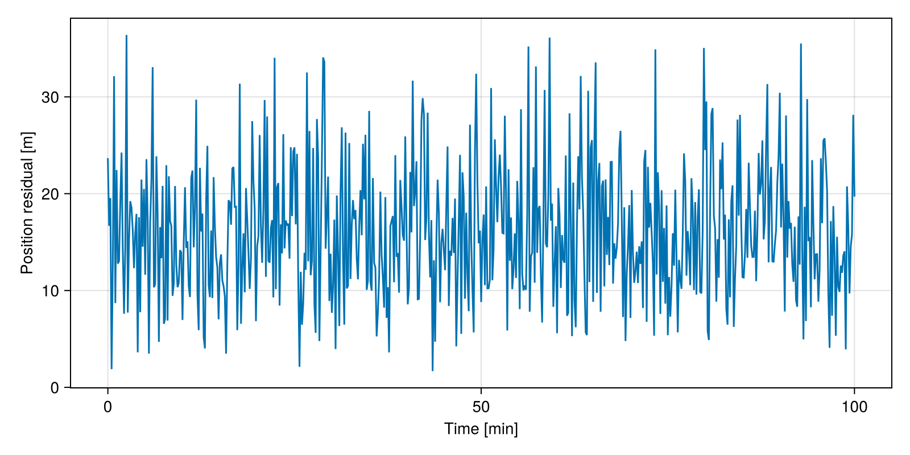
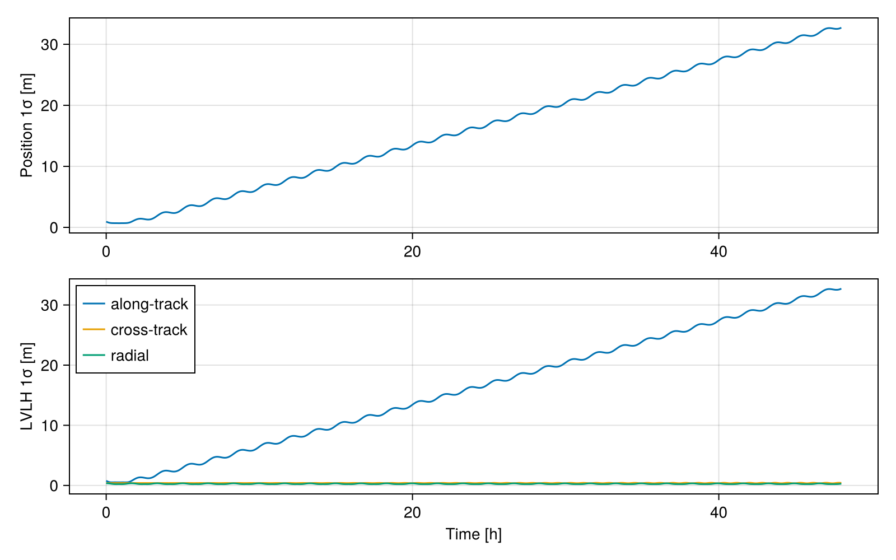

Mean Elements Fit and Covariance
In this tutorial, we will fit the mean elements of an analytical orbit propagator to a set of state vectors, as we would do with the navigation solutions of an onboard GNSS receiver, and then propagate the uncertainty of the fitted orbit. This is a simplified version of the orbit determination process that generates, for example, the two-line elements (TLE) used by the SGP4 propagator.
Theory
Analytical propagators like the J2 osculating propagator receive mean elements, from which the short-period variations caused by the $J_2$ term are added to obtain the osculating elements that correspond to the instantaneous position and velocity. Hence, we cannot initialize the propagator with the osculating elements computed from a single state vector: we must find the mean elements $\vec{x}$ that minimize the weighted residuals over a set of $k$ measurements $\vec{y}_k$:
\[\begin{equation*} \hat{\vec{x}} = \arg\min_{\vec{x}} \sum_k \left(\vec{y}_k - \vec{h}_k(\vec{x})\right)^T W \left(\vec{y}_k - \vec{h}_k(\vec{x})\right)~, \end{equation*}\]
where $\vec{h}_k$ propagates the mean elements to the instant of the $k$-th measurement and $W$ is the weight matrix. The Gauss-Newton method solves this problem iteratively using the Jacobian $J_k = \partial \vec{h}_k / \partial \vec{x}$:
\[\begin{equation*} \delta\vec{x} = \left(\sum_k J_k^T W J_k\right)^{-1} \sum_k J_k^T W \left(\vec{y}_k - \vec{h}_k(\vec{x})\right)~, \qquad P = \left(\sum_k J_k^T W J_k\right)^{-1}~. \end{equation*}\]
If $W$ is the inverse of the measurement covariance, $P$ is the covariance of the estimated state. The package SatelliteToolboxPropagators.jl implements this algorithm with the state $\vec{x}$ defined as the Cartesian position and velocity of the mean elements at the fit epoch, and it can compute the Jacobians using forward-mode automatic differentiation.
Once we have the covariance $P_0$ at the epoch, we can propagate it linearly using the state transition matrix $\Phi$, which is the Jacobian of the propagated state with respect to the initial state:
\[\begin{equation*} P(\Delta t) = \Phi(\Delta t) \, P_0 \, \Phi(\Delta t)^T~, \qquad \Phi(\Delta t) = \frac{\partial \vec{x}(\Delta t)}{\partial \vec{x}_0}~. \end{equation*}\]
The position covariance is easier to interpret in the LVLH (Local Vertical, Local Horizontal) frame. If $D$ is the rotation matrix from the inertial frame to the LVLH frame, the position covariance in the latter is:
\[\begin{equation*} P_{r, LVLH} = D \, P_{r} \, D^T~. \end{equation*}\]
Algorithm
We need to perform the following tasks:
- Generate a set of noisy state vectors from a known orbit;
- Fit the mean elements and compare them with the known values;
- Propagate the covariance using automatic differentiation; and
- Verify the linear propagation with a Monte Carlo simulation.
Code
Before starting, let's load all the packages in the SatelliteToolbox.jl ecosystem together with the auxiliary packages used in this tutorial:
using SatelliteToolbox
using CairoMakie
using ForwardDiff
using LinearAlgebra
using Printf
using Random
using StaticArraysWe will use the mean elements of a Sun-synchronous orbit as the truth. The J2 osculating propagator, initialized with Propagators.init, provides the position and velocity at every 10 s during one orbit:
jd₀ = date_to_jd(2023, 1, 1, 0, 0, 0)
orb_truth = KeplerianElements(
jd₀,
7130.982e3,
0.001111,
98.405 |> deg2rad,
90 |> deg2rad,
200 |> deg2rad,
45 |> deg2rad,
)
orbp = Propagators.init(Val(:J2osc), orb_truth)
vt = 0:10:6000
vr_true, vv_true = Propagators.propagate!(orbp, vt)
vjd = Propagators.epoch(orbp) .+ vt ./ 86400We simulate a GNSS receiver by adding Gaussian noise with 10 m and 0.01 m/s of standard deviation to each component of the position and velocity. The random number generator is seeded to make the results reproducible:
rng = MersenneTwister(1986)
σ_r = 10.0
σ_v = 0.01
vr_meas = [r + σ_r * randn(rng, SVector{3, Float64}) for r in vr_true]
vv_meas = [v + σ_v * randn(rng, SVector{3, Float64}) for v in vv_true]This concludes the first step of the algorithm.
The function fit_j2osc_mean_elements performs the least-squares fit. We select the automatic differentiation to compute the Jacobians with ForwardDiffJacobian() and pass the inverse of the measurement variances as weights, so that the returned matrix is the covariance of the estimated state. The keyword mean_elements_epoch selects the epoch of the fitted elements, which we set to the first measurement to compare with the truth:
W = SVector(1 / σ_r^2, 1 / σ_r^2, 1 / σ_r^2, 1 / σ_v^2, 1 / σ_v^2, 1 / σ_v^2)
orb_fit, P_fit, stats = fit_j2osc_mean_elements(
vjd,
vr_meas,
vv_meas;
mean_elements_epoch = vjd[1],
jacobian_method = ForwardDiffJacobian(),
weight_vector = W,
verbose = false,
)
orb_fitKeplerianElements{MeanAnomaly, Float64, Float64}:
Epoch : 2.45995e6 (2023-01-01T00:00:00)
Semi-Major Axis : 7130.981734 km
Eccentricity : 0.001111041013
Inclination : 98.40500022°
RA of Asc. Node : 89.99999964°
Arg. of Periapsis : 200.001406°
Mean Anomaly : 44.90861372°The function prints the progress of the iterations by default. We disabled it with the keyword verbose = false.
The statistics of the fit show that the algorithm converged in a few iterations and that the root mean square (RMS) of the residuals matches the noise we added. Notice that the RMS is computed using the norm of the residual vectors, which is $\sqrt{3}$ times the standard deviation of each component:
stats(converged = true, iterations = 4, position_rmse = 17.49604215289975, velocity_rmse = 0.017140133747480114, total_rmse = 2.4492767828433597)Let's compare the fitted elements with the truth. The fitted elements use the mean anomaly, whereas we defined the truth using the true anomaly. Hence, we convert the latter before comparing:
orb_truth_mean = convert(KeplerianElements{MeanAnomaly}, orb_truth)
angles = (
("i", orb_truth_mean.i, orb_fit.i),
("Ω", orb_truth_mean.Ω, orb_fit.Ω),
("ω", orb_truth_mean.ω, orb_fit.ω),
("M", orb_truth_mean.f, orb_fit.f),
)
a_t, a_f = orb_truth_mean.a, orb_fit.a
e_t, e_f = orb_truth_mean.e, orb_fit.e
println("Element Truth Fitted Difference")
@printf("a [m] %14.3f %14.3f %+12.3f\n", a_t, a_f, a_f - a_t)
@printf("e [-] %14.7f %14.7f %+12.3e\n", e_t, e_f, e_f - e_t)
for (name, t, f) in angles
δ = rad2deg(rem2pi(f - t, RoundNearest))
@printf("%s [°] %14.6f %14.6f %+12.3e\n", name, rad2deg(t), rad2deg(f), δ)
endElement Truth Fitted Difference
a [m] 7130982.000 7130981.734 -0.266
e [-] 0.0011110 0.0011110 +4.101e-08
i [°] 98.405000 98.405000 +2.201e-07
Ω [°] 90.000000 90.000000 -3.602e-07
ω [°] 200.000000 200.001406 +1.406e-03
M [°] 45.000000 44.998584 -1.416e-03The differences in the argument of perigee and in the mean anomaly are much larger than the others, but they have opposite signs. This is expected: in a nearly circular orbit, the position of the perigee is poorly defined, and only the sum $\omega + M$ is well observed.
The diagonal of the covariance matrix provides the standard deviation of the mean state at the epoch. Since we combined hundreds of measurements, it is much smaller than the measurement noise:
σ_fit = sqrt.(diag(P_fit))
σ_pos = norm(σ_fit[1:3])
σ_vel = norm(σ_fit[4:6])
@printf("Mean state 1σ at the epoch: position %.3f m, velocity %.5f m/s\n", σ_pos, σ_vel)Mean state 1σ at the epoch: position 0.943 m, velocity 0.00089 m/sFinally, let's verify the residuals by propagating the fitted elements at the measurement instants. The result must look like the noise we added:
orbp_fit = Propagators.init(Val(:J2osc), orb_fit)
vr_fit, vv_fit = Propagators.propagate!(orbp_fit, vt)
vres = norm.(vr_meas .- vr_fit)
fig = Figure(size = (800, 400))
ax = Axis(fig[1, 1]; xlabel = "Time [min]", ylabel = "Position residual [m]")
lines!(ax, vt ./ 60, vres)
fig
This concludes the second step of the algorithm.
To propagate the covariance, we need a function that maps the Cartesian mean state at the epoch to the Cartesian osculating state after $\Delta t$. The package ForwardDiff.jl computes its Jacobian by evaluating the function with a special number type. Hence, the function must create the propagator structures using the element type of its input, which we obtain with eltype. We use the low-level API of the J2 osculating propagator for this purpose:
function j2osc_map(x₀::AbstractVector, Δt::Number, epoch::Number; j2c = J2C_EGM2008)
T = eltype(x₀)
r₀ = SVector{3}(x₀[1], x₀[2], x₀[3])
v₀ = SVector{3}(x₀[4], x₀[5], x₀[6])
j2d = J2Propagator{typeof(epoch), T}()
j2d.j2c = J2PropagatorConstants{T}(j2c)
j2oscd = J2OsculatingPropagator{typeof(epoch), T}()
j2oscd.j2d = j2d
j2osc_init!(j2oscd, rv_to_kepler(r₀, v₀, epoch))
r, v = j2osc!(j2oscd, Δt)
return vcat(r, v)
endThe epoch is kept as a Float64 because we do not differentiate with respect to it. Every other structure field must use the type T, otherwise the automatic differentiation fails when it tries to store its numbers.
The Cartesian mean state at the epoch is obtained by converting the fitted elements with kepler_to_rv. Let's propagate the covariance for one day:
r₀, v₀ = kepler_to_rv(orb_fit)
x₀ = vcat(r₀, v₀)
epoch = orb_fit.t
Δt = 86400.0
Φ = ForwardDiff.jacobian(x -> j2osc_map(x, Δt, epoch), x₀)
P = Φ * P_fit * Φ'
@printf("Position 1σ after one day: %.3f m\n", sqrt(sum(diag(P)[1:3])))Position 1σ after one day: 16.363 mWe can now repeat the computation at every minute during two days, projecting the position covariance onto the LVLH frame using r_eci_to_lvlh:
vΔt = 0.0:60.0:(2 * 86400.0)
vσ_pos = Float64[]
vσ_lvlh = SVector{3, Float64}[]
for Δt in vΔt
x_t = j2osc_map(x₀, Δt, epoch)
Φ_t = ForwardDiff.jacobian(x -> j2osc_map(x, Δt, epoch), x₀)
P_t = Φ_t * P_fit * Φ_t'
D_t = r_eci_to_lvlh(SVector{3}(x_t[1:3]), SVector{3}(x_t[4:6]))
P_lvlh = D_t * P_t[1:3, 1:3] * D_t'
push!(vσ_pos, sqrt(sum(diag(P_t)[1:3])))
push!(vσ_lvlh, sqrt.(SVector{3}(diag(P_lvlh))))
end
fig = Figure(size = (800, 500))
ax1 = Axis(fig[1, 1]; ylabel = "Position 1σ [m]")
lines!(ax1, vΔt ./ 3600, vσ_pos)
ax2 = Axis(fig[2, 1]; xlabel = "Time [h]", ylabel = "LVLH 1σ [m]")
for (i, label) in enumerate(("along-track", "cross-track", "radial"))
lines!(ax2, vΔt ./ 3600, getindex.(vσ_lvlh, i); label = label)
end
axislegend(ax2; position = :lt)
fig
The uncertainty grows almost linearly in the along-track direction, since a small error in the semi-major axis changes the mean motion and, hence, the position along the orbit accumulates an error over time. The radial and cross-track components stay bounded and oscillate with the orbital period. This concludes the third step of the algorithm.
The linear propagation is an approximation. We can verify it with a Monte Carlo simulation: we draw samples of the initial state using the covariance $P_0$, propagate each one for one day, and compare the dispersion of the results with the linear prediction:
L = cholesky(Symmetric(P_fit)).L
N = 500
x_nom = j2osc_map(x₀, 86400.0, epoch)
samples = [j2osc_map(x₀ + L * randn(rng, 6), 86400.0, epoch) - x_nom for _ in 1:N]
σ_mc = sqrt(sum(abs2, reduce(hcat, samples)[1:3, :]) / N)
σ_lin = sqrt(sum(diag(P)[1:3]))
@printf("After one day: linear = %.3f m, Monte Carlo = %.3f m\n", σ_lin, σ_mc)After one day: linear = 16.363 m, Monte Carlo = 16.353 mBoth values agree, confirming that the linear propagation is adequate for uncertainties of this magnitude. This concludes the tutorial.